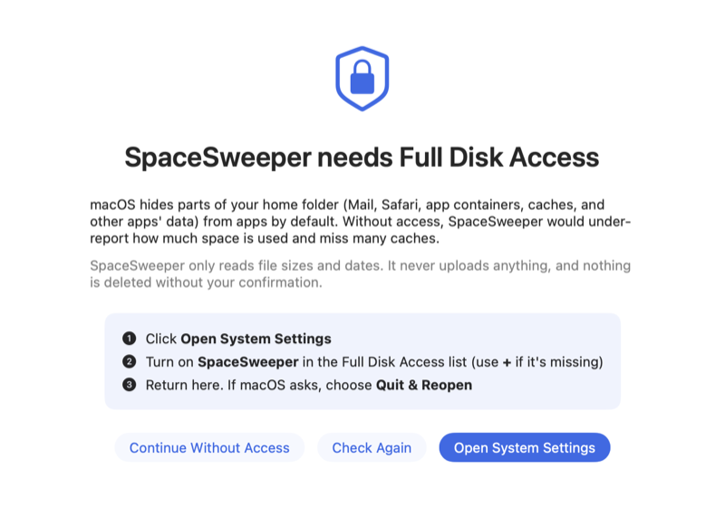

Install SpaceSweeper
Four steps, about five minutes. You'll need macOS 14 Sonoma or later and your Mac's password.
-
Download it
Click Download for Mac above. SpaceSweeper.dmg is saved to your Downloads folder.
-
Drag it to Applications
- Double-click SpaceSweeper.dmg in Downloads.
- In the window that opens, drag the SpaceSweeper icon onto the Applications folder.
- Close the window. You can throw the .dmg file away.
If you open it straight from that window by mistake, SpaceSweeper offers to move itself. Click Move to Applications.
-
Open it the first time
macOS blocks apps from developers who aren't in Apple's paid program until you allow them. You only do this once.
- Double-click SpaceSweeper in Applications. When macOS says it can't check the app, click Done.
- Open System Settings › Privacy & Security.
- Scroll down to the SpaceSweeper message and click Open Anyway.
- Enter your password and click Open Anyway again.
On macOS 14 there's a shortcut: Control-click the app, choose Open, then Open again.
-
Allow Full Disk Access
SpaceSweeper shows this screen on first launch. Without access, macOS hides some folders and the totals come out low.
- Click Open System Settings.
- Turn on SpaceSweeper and enter your password.
- Click Quit & Reopen if asked, then Start Scan.

After installing
- Updates
- SpaceSweeper checks by itself and asks before installing. To check now: SpaceSweeper › Check for Updates…
- Uninstalling
- Drag it from Applications to the Trash. Its saved scan is in ~/Library/Application Support/SpaceSweeper.
- Problems
- Report a problem on GitHub, or open Help in the app's sidebar.